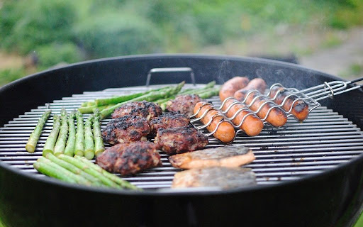

About Cooking
Cooking, cookery, or culinary arts is the art, science and craft of using heat to prepare food for consumption.
Cooking techniques and ingredients vary widely, from grilling food over an open fire to using electric stoves, to baking in various types of ovens, reflecting local conditions.
Preparing food with heat or fire is an activity unique to humans. Archeological evidence of cooking fires from at least 300,000 years ago exists,
but some estimate that humans started cooking up to 2 million years ago.
Why i Love that Hobbie?
- When i cook, i feel realy focused in the cooking
- I can make tasty food for my friend and family
- My favorite type of Cooking is BBQ!